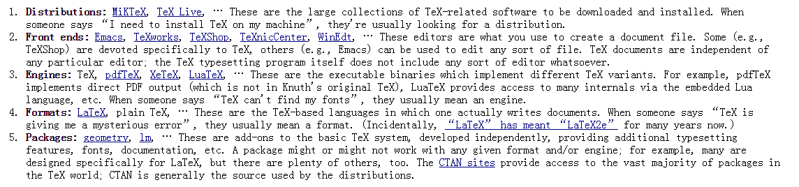

Getting Started
LaTeX is a document preparation system for high-quality typesetting, which is often used for technical and scientific documents.
Let’s take an example first. Imagine you’re a writer, you want to write a new article and you start typing words in computer. When you open Microsoft Word, you find that you have to decide the font type, font size, layout … What you’re doing is not writing, but designing, which is definitely beyond the work of a writer! Well, this is where LaTeX comes. The biggest benefit of LaTeX is that it encourages authors to concentrate more on the document content but less on the document appearance. It makes authors work more efficiently.
As a beginner, I often get confused by many terms in TeX world. The following picture really helped me out.

To make LaTeX run on your computer, you need to intall it first. There are many free software in various platforms. Choose the one which suits your operating system. I am using MiKTeX, which is a Windows distribution.
Next, I will go through two short, but powerful tutorials which could be accessed here and here. Paste each tutorial to TexWorks and press CTRL + T to view PDF result.
Tutorial 1
In tutorial1, the following knowledge could be concluded.
- Everything to the right of a % is a remark to you and is ignored by LaTeX.
- \section{Section Title} makes a section title
- \subsection{Subsection Title} makes a subsection title, and so as \subsubsection and \subsubsubsection …
- Words are separated by one or more spaces. Paragraphs are separated by
one or more blank lines. The output is not affected by adding extra
spaces or extra blank lines to the input file. - Double quotes: ``quoted text’’
- Single quotes: `single-quoted text’
- Long dashes: like—this
- Emphasized text: \emph{this is emphasized}
- Bold text: \textbf{this is bold}
- The following seven are printed by typing a backslash in front of them: \$ \& # \% _ { and }.
Tutorial 2
In tutorial2, the following knowledge could be concluded.
- \documentclass{article}: specifies the document class
- \title{An Example Document}: declares the document’s title
- \author{LesLie Lamport}: declares author name
- \date{January 31, 2017}: declares date, deleting this command will produce today’s date
- \maketitle: produces the title
- \newcommand{\ip}[2]{(#1, #2)}: defines new command with name ‘ip’ and two arguments
- \LaTeX: generates the LaTeX logo
Quotes within quotes:
1``\,`this' is what I just wrote, not `that'\,'' means "'this' is what I just wrote, not 'that'"Intra word dash: intra-word (1 dash)
- Medium dash: 1–2 (2 dashes)
- Long dash: like—this (3 dashes)
- Ellipsis: \ldots
- TeX ignores spaces after command names
Emphasize long sentence:
12345\begin{em}A long segment of text can also be emphasizedin this way. Text within such a segment can begiven \emph{additional} emphasis.\end{em}Footnotes: Footnotes\footnote{This is an example of a footnote.} pose no problem.
- $ … $ and ( … ) are equivalent, both denote a mathematical symbol
- Itemize & Enumerate: 12345678910111213141516171819202122\begin{itemize}\item This is the first item of an itemized list.Each item in the list is marked with a ``tick''.You don't have to worry about what kind of tickmark is used.\item This is the second item of the list. Itcontains another list nested inside it. The innerlist is an \emph{enumerated} list.\begin{enumerate}\item This is the first item of an enumeratedlist that is nested within the itemized list.\item This is the second item of the inner list.\LaTeX\ allows you to nest lists deeper thanyou really should.\end{enumerate}This is the rest of the second item of the outerlist. It is no more interesting than any otherpart of the item.\item This is the third item of the list.\end{itemize}
Written with StackEdit.